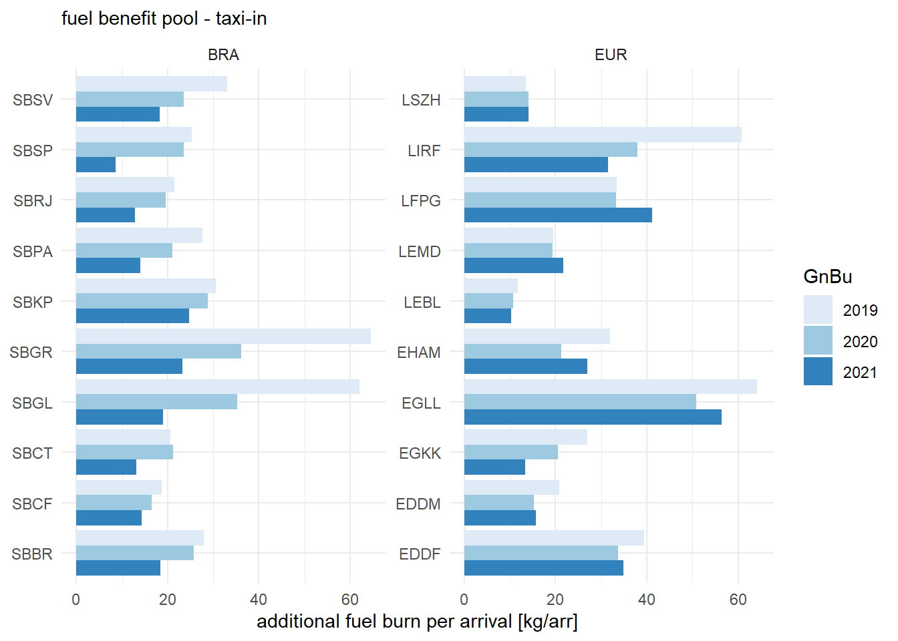
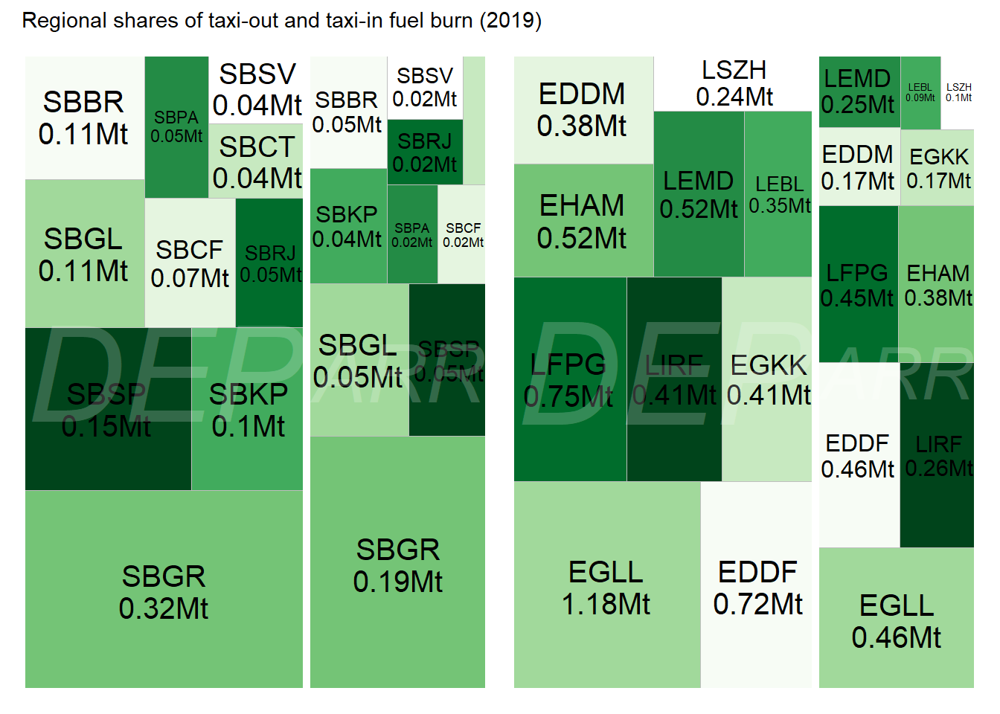
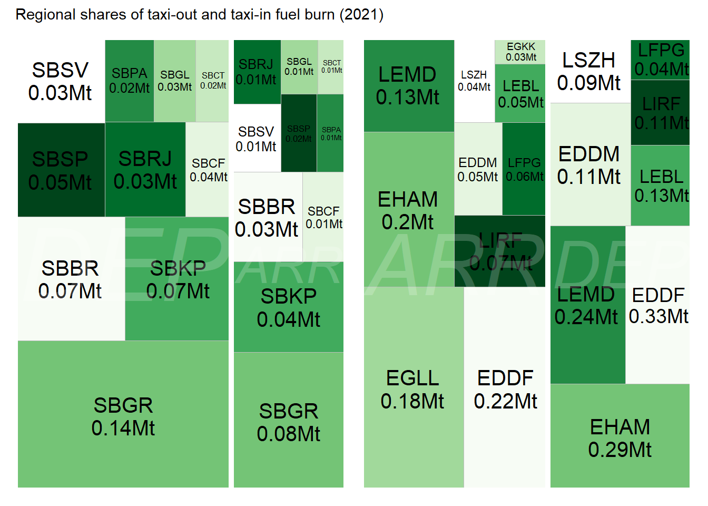

7 Environment
7.1 Overview and Motivation
At ICAO Assembly 40 in 2019 two global aspirational goals for curbing the impact of the international aviation sector were agreed. This includes an annual fuel efficiency improvement of 2% through 2050 and carbon neutral growth from 2020 onwards (c.f. ICAO (2019b)). Across the globe, states have defined ambitious political goals to address the impact of climate change. For example, the European Union launched its Green Deal (European Commission (2019)) and Fit-for-55 initiative. The latter strives strives towards cutting the net greenhouse gas emissions by at least 55% by 2030, compared to 1990 levels (European Commission (2021)).
In general terms, air navigation shall contribute to the protection of the environment by considering noise, gaseous emissions and other environmental issues in the implementation and operation (KPA Environment, c.f. Appendix D ICAO (2005). Accordingly, there is a higher interest in monitoring/estimating the impact of operational (in)efficiency. Operational inefficiencies typically increase the aircraft flying time (i.e. airborne and surface movement times) and , thus, engine running time. Engine time is directly linked to fuel burn and associated emissions and pollutants. In that respect, inefficiencies contribute to the ditremental effect of excessive emissions to climate change.
The Global Air Navigation Plan (GANP) proposes indicators for regional benchmarking (ICAO 2019a). However, there is no detailed guidance on how to measure additional fuel burn. Fuel burn per se is known to the aircraft operator. While the actual fuel burn and fuel flow during the flight is recorded (e.g. flight data recorder), these data are not commonly shared. It is noteworthy that aircraft operators have to report their fuel burn per flight in Brazil (c.f. ANAC reporting files). This level of data is not available in Europe (or generally across the globe).
For this report, both groups tapped into openly available data sources and developed an initial approach to quantifying operational inefficiencies with respect to fuel burn. It is planned to refine this approach in consultation with the international operational performance benchmarking community.
7.2 Fuel Burn Estimation
The appendix presents an initial approach to estimating fuel burn during taxi operations as part of a comparison report. Figure 7.1 depicts the monthly estimated fuel burn at a European hub for the taxi-in and taxi-out phase. It must be noted that the metric uses parameters of the ICAO landing and take-off cycle (LTO). The LTO estimates represent upper bounds for the fuel estimation and overestimates the actual fuel burn.
Figure 7.1 highlights that there is a higher fuel burn during the departure phase. This phase entails the take-off roll with a thrust setting at or close to 100%. This adds a substantial component to the fuel burn during take-off in comparison to the taxi-in phase. As mentioned above, the quantities shown reflect upper bounds based on the LTO assumptions and do not account for operational reduction measures such as single-engine taxi or reduced thrust take-offs. It is planned to refine the approach with the international benchmarking community and account for such operational measures.
7.3 Environmental Benefit Pool - Taxi
Earlier work has introduced the concept of an environmental benefit pool, c.f. EUROCONTROL Performance Review Unit and FAA Air Traffic Organization (2019).

Figure 7.2 shows the fuel benefit pool for the taxi-in phase per arrival. The benefit pool is influenced by the fleet mix and the overall taxi-in performance. Thus, it varies significantly across the airports.
With the exception of Rome Fiumicino (LIRF), there is an increase in the benefit pool when comparing 2020 and 2021 within the European region.
Comparing Figure 7.3 with Figure 7.2 shows the overall impact of higher observed taxi-out times and the high-thrust take-off run. For the major hubs in Europe the traffic decline during the COVID phase culminated in sharp decline of the average additional fuel burn per departure when comparing 2019 levels to 2020 or 2021. The impact of congestions on the taxi-operations and the associated refernce times was highlighted already in the efficiency chapter. In light of this, the results for London Heathrow (EGLL) and London Gatwick (EGKK) need to be interpreted comparing the absolute different between the different years. The decline in traffic allowed to operate without constraints which resulted in a - numerical - gain.
However, this showcases that the determined reference times internalised inefficiencies. The values for these airports range higher than presented. Future research will address how such variations in terms of traffic load can be better captured as part of the benefit pool approach.
7.4 Mapping of Benefit Pools
The following Figures depicts the observed shares of additional fuel burn for taxi-out and taxi-in. It must be noted that the totals are based on the assumptions of the ICAO LTO cycle. As such the estimates present an upper bound and do not take into consideration single-engine taxi-operations, reduced taxi-thrust, etc.


7.5 Summary
This chapter is a first attempt to estimate the environmental impact of operational inefficiencies at airports. The determined benefit pools for taxi-in and taxi-out vary significantly between airports. While operational inefficiencies, e.g. higher sequencing and holding times, impact on the overall taxi-phase duration - and ultimately - the total fuel burnt during these phases, the metric is also dependent on the different fleet mix observed at these airports. The impact of wide-bodies (and primarily international traffic) can be readily observed for the major hubs during 2019. The COVID related decline of operations of these types and connections, resulted in a sharp drop of the measured benefit pool in 2020 and 2021.
Based on the underlying databank of aircraft types and associated fuel burn indices, more detailed analyses will be feasible in future reports.